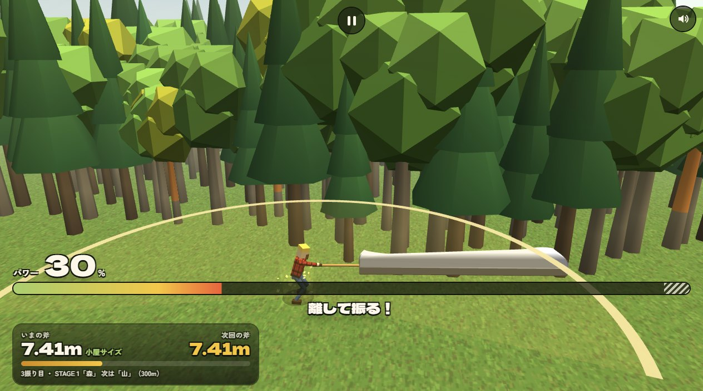
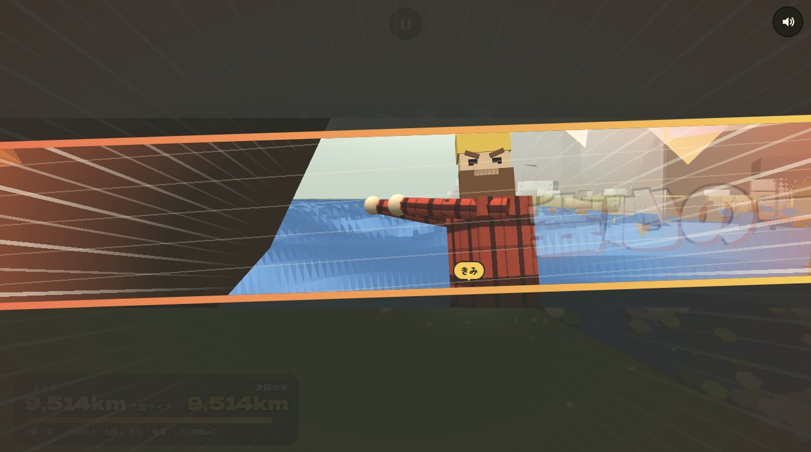
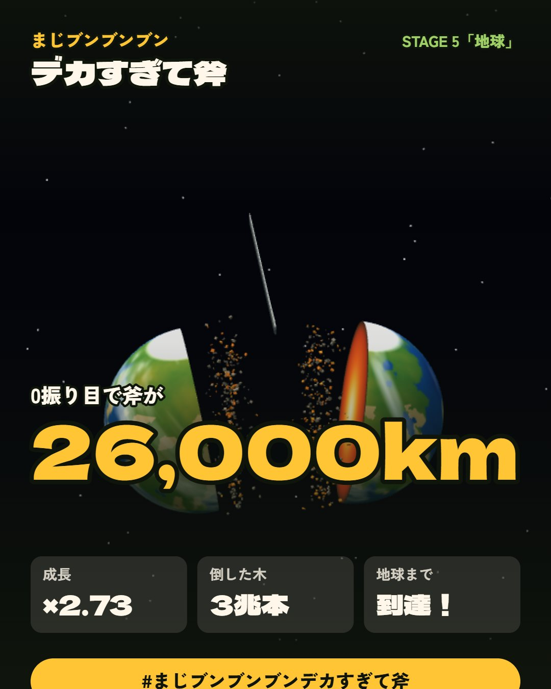

这是什么游戏
- 赛道
- 网页小游戏 · 放置/点击（无账号、无变现的单机作品）
- 核心玩法
- 长按蓄力 → 在 36ms 满力平台松手 → 会心 ×1.15 → 斧长按复利公式暴涨 → 13 振劈开地球
- 次要玩法
- 无 —— 没有局外养成，没有系统树，单局结束即结算
- 变现形态
- 零变现（源码实测：无广告 SDK、无内购、无货币、无分享奖励，外部请求只有 three.js CDN 与 Google Fonts）
- 付费群体
- 不存在付费群体 —— 这是作品不是产品，靠分享传播而非付费转化
美术坐标系 先定风格，再谈完成度
玩法分层与舒适区
只有一个输入：长按蓄力、松手挥斧。但满力窗口只有 36ms，且判定阈值随进度从 0.96 收紧到 0.99 —— 越到后期越苛刻
局内无选择、无构筑。每局唯一变量是「你能不能稳定打出满力」，深度全在时机而非规划
每一次挥砍都有顿帧 0.17s、震屏、FOV 冲击、震动、专属音效与台词；会心时 0.04 倍速 cutin + 速度线 + 闪白 + BGM 切换
适合
- 喜欢纯爽感、追求操作手感的人（这是它最擅长的地方）
- 喜欢日式荒诞喜剧与自嘲文案的人
- 不想注册账号、不想被广告打扰的人
不适合
- 追求长期养成与系统深度的人（它没有任何局外系统）
- 不愿意练习手速的人（满力窗口会从 36ms 收紧）
- 期待持续内容或社交的人（一局通关后再无目标）
标杆对比评分 每一维都给出对标物
对标同赛道「单机制做到极致」的极简网页小品
36ms 满力窗口 + 随进度收紧的判定阈值，把 clicker 变成了少见的真技巧游戏
对标同类放置游戏的成长曲线冗余度
13 振即理论最优，我两遍实打都命中；会心 ×1.15 是乘法叠加在成长率上，复利结构干净
对标网页 canvas 品类的手感上限
hitstop/震屏/FOV/震动/17 音效/表情/嘲讽台词，街机级表现力，投入远超「小游戏」该有的水准
对标日式小品的世界观与文案调性
「砍树→砍山→砍海→砍大陆→砍地球」用一条数字轴串起来，荒诞但自洽，循环闭合干净
对标同风格 low-poly 程序生成小品
风格统一、精度有限但取舍明确；扣分在几何精度与界面排版细节，非风格问题
对标同赛道头部的局外系统树（《正中靶心》宝石/城墙/学徒）
零系统是设计选择而非缺陷，但与同赛道头部相比系统承载力差距明显；且无中途存档
对标同赛道商业化产品的首充破冰与付费深度
零变现，源码实测无广告 SDK、无内购、无货币。作为作品完全成立，作为产品不成立
总分保留 8.5，衡量的是「以同赛道极简小品的标准看，它在哪个位置」。结论：手感与反馈是碾压级，系统与商业化基本不存在。
实机截图 4 张




系统与活动清单 9 个入口
| 系统 | 状态 | 说明 |
|---|---|---|
| 战斗（挥斧） | 已开放 | 唯一核心交互。长按蓄力 + 松手释放，36ms 满力平台 |
| 力量槽 / 会心判定 | 已开放 | 右下角斜纹区为会心带，阈值随进度从 0.96 收紧到 0.99 |
| 分级评价 | 已开放 | 最初の一本 / 伸び悩み… / まあまあ / 好調 / 最大成長！，五档表现反馈 |
| 结算页 / 结局页 | 已开放 | 结果页与结局页（存在数值不一致 Bug，见缺陷清单） |
| 分享（X / LINE / 原生） | 已开放 | navigator.share + X + LINE，无任何分享奖励 |
| 背景音乐开关 | 已开放 | HUD 上的 BGM 按钮 |
| 暂停 | 已开放 | pause 面板，支持 Space/Enter/Esc/P 键盘操作 |
| 存档 | 已开放 | localStorage 键 dekasugiru-ono-v1，10 个字段，仅在 endRound() 时写入 —— 无中途存档 |
| 局外养成 / 商城 / 活动 / 装备 | 不存在 | 源码中完全不存在这些系统，单局结束即终点 |
系统与数值体系对标 以哪个为基础
| 系统 | 对标产品 | 基础上位 | 依据 |
|---|---|---|---|
| 局内操作 | 同赛道单机制小品（一个动作做到极致） | 自创 | 源码仅 1 个输入：长按蓄力、松手挥斧；蓄力曲线 0→1 爬升 + 36ms 满力平台 + 衰减，会心判定 CZ() 随进度从 0.96 收紧到 0.99 |
| 数值成长 | 同类放置游戏的成长公式冗余度 | 自创 | growthFactor = (1.15 + 3.0 * q^0.85) * (perfect ? 1.15 : 1)，G_MAX = 4.7725；按公式反推从 0.97m 到 26,000km 恰好 13 振，两遍实打完全吻合 |
| 反馈系统 | 网页 canvas 品类的手感标准答案 | 街机手感规格 | hitstop 出现 27 处、G.shake 37 处、buzz() 24 处、fovKick 13 处；16 种 WebAudio 合成音效；6 条打击台词；3 张 Canvas 现画的表情贴图；会心 0.04 倍速 cutin + 速度线 + 闪白 + BGM 切换 |
| 局外养成 / 装备 / 活动循环 | 《正中靶心》宝石/城墙/学徒、《咸鱼之王》周常三循环 | 不存在（有意为之） | 源码全文检索无任何养成货币、装备、商店、活动相关实现；存档对象仅 10 个字段（total/bestOne/plays/axe/cleared/perfects/bgm/swings/bestClear），无资源背包 |
| 商业化 | 同赛道商业化产品（首充破冰、付费深度） | 零变现 | 源码全文检索无广告 SDK、无内购、无货币、无分享奖励；外部请求仅 three.js r128 CDN、Google Fonts、X、LIKE 四个 |
商业化体验 零变现（作品，非产品）
| 指标 | 实测值 | 状态 |
|---|---|---|
| 首个付费点弹出时机 | 无 —— 不存在任何付费点 | 已测 |
| 首日不付费能玩多久 | 无限（无体力、无体力上限、无倒计时）；单局约 2.5 分钟，可反复重开 | 已测 |
| 卡点后首充能额外玩多久 | 不适用 —— 无卡点、无首充 | 已测 |
| 首日充值上限 | 0 元（无法充值） | 已测 |
| 分享奖励 | 无 —— 分享只是导出结果卡与文案，无任何回流奖励 | 已测 |
| 留存手段 | 仅 localStorage 记录 total/plays/bestOne/cleared/perfects，无签到、无每日任务、无活动 | 已测 |
这一栏是「负向结论」但很重要：**它说明了产品的性质**。这是一个完成度极高的作品（作品 = 表达完整），但不是一个完整的产品（产品 = 有留存与变现闭环）。若要商业化，缺的不是变现设计，而是先要有留存内容 —— 而它连一个局外系统都没有。
まじブンブンブンデカすぎて斧 —— 把时机做成唯一技巧的网页小品
先说结论：这是一个设计密度极高的网页单机游戏。它只用 1 个 HTML 文件 + 1 个 three.js CDN 就实现了从森林砍到地球劈成两半的完整弧线，音效全部用 WebAudio 实时合成、美术全部程序生成，零素材文件。它甚至内置了给我这种自动化玩家准备的调试接口 window.__dekasugi。
但我扒完 15 万字符源码、实打两遍之后，也发现了三个真实问题——包括一处会让成绩显示自相矛盾的 bug。
开篇：先说清它是什么、跟谁比
它是什么：网页小游戏 · 放置/点击赛道。零账号、零变现、零局外系统 —— 源码全文检索无广告 SDK、无内购、无货币、无分享奖励，外部请求只有 three.js r128 CDN、Google Fonts、X、LIKE 四个。
这个赛道的头部不是《咸鱼之王》那类重度放置卡牌，而是「单机制做到极致」的极简网页小品。在这个坐标系里，比的不是谁系统多，而是一个机制被打磨到什么程度。
美术坐标系：日式荒诞喜剧 —— low-poly 程序生成几何 + 漫画速度线 + 竖版海报排版（Dela Gothic One）。
这里正好可以对照《正中靶心》：同样是「画面简单」，《正中靶心》走的是极简美术 + 极深系统（涂鸦画风背后藏了宝石/城墙/学徒/图鉴四套局外系统）；本作走的是极简美术 + 极深单点（画面同样简单，但把全部产能压进了反馈系统）。
两条路都成立，判据是：简单有没有换来功能完整。《正中靶心》用简单画面换系统深度，本作用简单画面换反馈密度 —— 27 处 hitstop、37 处震屏、13 处 FOV 冲击、24 处震动调用、16 种 WebAudio 合成音效、6 条打击台词、3 张 Canvas 现画的表情贴图。它的美术低多边形 + 程序生成不是省事，是主动选择把预算全砸在手感上。 所以它在这条赛道的反馈密度一项上是碾压级的。
玩法分层：
| 轴 | 位置 | 依据 |
|---|---|---|
| 操作要求 | 中操作（单动作，精度要求高） | 只有一个输入：长按蓄力、松手挥斧。但满力窗口只有 36ms，阈值随进度从 0.96 收紧到 0.99 |
| 决策深度 | 极低 | 局内无选择、无构筑，每局唯一变量是「能不能稳定打出满力」 |
| 反馈节奏 | 极快反馈 | 每砍一次都有顿帧 0.17s、震屏、FOV 冲击、震动、音效、台词；会心时 0.04 倍速 cutin + 速度线 + 闪白 + BGM 切换 |
舒适区画像：短时爽感型 —— 通勤、摸鱼、睡前 2.5 分钟要一把即时反馈的人。
- ✅ 适合：喜欢纯爽感与操作手感、喜欢日式荒诞喜剧、不想注册账号也不想被广告打扰的人
- ❌ 不适合：追求长期养成与系统深度、不愿练手速、期待持续内容或社交的人
最后一条尤其要说明：通关后没有理由回来。localStorage 只记 10 个字段（total/bestOne/plays/axe/cleared/perfects/bgm/swings/bestClear），没有签到、没有每日任务、没有活动、没有商城。所以 8.5 分评的是「作品完成度」，不是「产品完成度」—— 这一点在后面的商业化体验里会再展开。
一、核心机制：把「时机」做成唯一的技巧
游戏只有一个输入：长按蓄力、松手挥斧。看起来 clicker 味十足，但源码里藏着一个精巧的设计：
const PW_UP = 0.73, PW_TOP = 0.036;
power = t < PW_UP ? t / PW_UP // 0→1 爬升
: t < PW_UP + PW_TOP ? 1 // 36ms 的满力平台
: Math.max(0, 1 - (t - PW_UP - PW_TOP) / PW_UP); // 衰减
满力窗口只有 36 毫秒。更狠的是判定阈值 CZ() 会随进度从 0.96 收紧到 0.99——斧子越大，手感越苛刻。
这是全游戏最好的设计决策，原因有三：
- 它把一个纯数值游戏变成了技巧游戏。没有蓄力判定的话，你只是在等一个数字变大。
- 惩罚只锁当前一把，不锁存档。不完美时
retryFirst()重来，但斧子不涨——你永远在「上一把的进度」上，不损失沉没成本。 - 失败有渐进式教学。源码里
firstFails驱动的三段提示：
第 1 次：「効いてない！ 会心でないと斬れない」
第 2 次：「会心でしか斬れない！ もう一回！」
第 3 次：「ゲージ右端のシマシマ（会心ゾーン）で離そう！」
第三次才指出「看准右下角那条斜纹」，是把 UI 本身当教程。这个反馈闭环做得很干净。
二、数值：紧凑得几乎没有浪费
成长公式：
growthFactor = (1.15 + 3.0 * q^0.85) * (perfect ? 1.15 : 1) // G_MAX = 4.7725
会心 ×1.15 是乘法叠加在成长率上的——不只是这一刀砍得多，是让后续每一把都涨得更快。设计上叫「复利」，实际效果是：会心越早，差距滚得越快。
我按公式反推了理论下限：从 0.97m 涨到 26,000km（跨越 7 个数量级）恰好需要 13 振。我两遍实打都是 13 振，每把的成长曲线逐项吻合理论值：
0.97m → 1.55m → 7.41m → 35m → 169m → 805m → 3.84km → 18.3km
→ 87.5km → 418km → 1,993km → 9,514km → 26,000km
没有一步浪费。游戏自己的 swingsLeft() 函数也是这么算的。
评价：数值层是合格的，而且是超出规格的合格。玩家能通过读懂
rHint（「会心なら ×4.77 伸びていた」）自行推导最优解，这比直接给「最优 13 振」要好得多。
三、反馈系统：把「砍」做成了打击游戏
源码里 hitstop 出现 27 处、G.shake 37 处、buzz() 24 处、fovKick 13 处。每一刀都有：
- 顿帧（hitstop）：命中瞬间冻结 0.17 秒
- 震屏：会心 2.4，普通 1.5，随砍中数量递增
- 视野冲击（fovKick）：镜头猛拉
- 震动反馈（
navigator.vibrate）：移动端物理震动 - 16 种程序化音效：
sfx.chop/crunch/shing/megaBoom/laugh/rumble/...全部 WebAudio 实时合成，无音频文件 - 6 条打击台词：
ガキィン!! 山が硬い…/ジーン…/ズガァァァン!!!/ボイ〜ン!! 地球は硬い…/海が、割れた!!!/地球、両断!!!! - 表情贴图：源码里用 Canvas 现画了 3 张
FACE_TEX，树会对你做鬼脸
会心时更夸张：进入 0.04 倍速的 cutin 演出、漫画式速度线横切画面、全屏闪白、专属 BGM 切换。这是全游戏最爽的一段。
评价：反馈层投入远超「小游戏」该有的水准。那套
hitstop + shake + fovKick + 震动 + 特效字的组合拳，是把浏览器 canvas 做出街机手感的标准答案。
四、氛围与叙事：荒诞喜剧的底子
它认真写了世界观：
一本の木を切るのがやっとだった斧は、ついに地球を真っ二つにした。斧は元の大きさに戻り、また一本の木から始まる。
（连砍一棵树的斧子，终于把地球切成了两半。斧子回到原来的大小，又从一棵树开始。）
标题「まじブンブンブンデカすぎて斧」（真的已经大得离谱的斧头）+ 副标题「地球、両断。」 这种一本正经地胡说八道的调性，从头贯穿到尾。树会嘲讽你「その斧つまようじ？」（你那斧子是小树枝吗？）；地球会让你「46億年早いわ」（早四十六亿年了）。这些嘲讽在失败时出现，把失败变成了内容而不是惩罚。
结局那句「斧は元の大きさに戻り、また一本の木から始まる」既是剧情收尾，也是下一局的开始——循环闭合得很漂亮。
评价：文案质量是专业水准。「砍树→砍山→砍海→砍大陆→砍地球」这条线，用一个数字轴（0.97m → 26000km）串起来，荒诞但自洽。
五、问题：我实打出来的三个真 bug
这是我要重点说的部分，因为这些问题都不是我推测的，是我实测复现的。
Bug 1：分享文案说「0振り目」，和结局的「13振り」直接打架 ⚠️
通关后我在同一页面读到三个数字：
| 位置 | 显示 | 实际 |
|---|---|---|
| 结局页 | 13 振り | ✅ |
| 结果页 | 12 振り | ❌ 少 1 |
| 分享文案 | 0振り目 | ❌ 完全错 |
原因在 earthClear()：
save.cleared++; save.swings = 0; save.axe = 0.97; ... // 通关后归零
但结果页和分享卡都从 save.swings 读数：
$('rSwingNo').textContent = fmt(save.swings); // 读到 0
text: save.swings + '振り目で斧が' + fmtLen(r.nextL) + 'に！' // 读到 0
分享卡还叠加了 G.res 里上一轮的残留数据，于是拼出这句自相矛盾的文案：
「0振り目で斧が26,000kmに！（×2.73 会心！！）3兆本なぎ倒した。地球まであと一振り」
同一张卡上既说斧子已经 26,000km（远超地球直径），又说「离地球还差一振」。
讽刺的是：通关瞬间 earthClear() 明明正确捕获了 G.endStats={swings:13, ...}，结局页用的就是它——数据是对的，只是分享卡和结果页没走这条路。修起来不难：分享文案应该用 G.endStats.swings，或在 earthClear() 前把数值存进 G.res。
Bug 2：结果页振数差 1
结果页显示 12 振（那是通关前最后一把的累计），结局页显示 13 振。玩家通关后在两个界面之间来回看，会困惑「到底挥了几下」。
Bug 3：rNext 和 rNow 显示同一个值
$('rNow').textContent = fmtLen(nowL);
$('rNext').textContent = fmtLen(nowL); // ← 应该是 nextL
「下一把斧子」这个信息在通关瞬间就丢了——而这恰恰是玩家最想看的。
六、其它值得一提的观察
做得好的：
- 移动端适配完整：
pointer:coarse探测、navigator.share原生分享、navigator.vibrate、Wake Lock 防息屏、自定义字体加载、Dela Gothic One 的日式海报排版、X 和 LINE 两家分享 - 键盘也能玩：Space/Enter 蓄力释放、Esc/P 暂停
- 零素材依赖：所有音效 WebAudio 合成，所有贴图 Canvas 现画，所有模型程序生成。整个游戏就是 1 个 HTML 文件，部署成本几乎为零
- 分级评价：
最初の一本 / 伸び悩み… / まあまあ / 好調 / 最大成長！，玩家能直观看到自己发挥得好不好
可以更好的：
- 音效缺少「会心」专属辨识度。17 个音效里
shing（会心）和swing（普通）区分度不够，闭眼玩很难判断这一刀是不是满力——而这恰恰是全游戏最重要的反馈 rMul硬编码'×1.00'，成长倍率在结果页永远显示 1.00- 没有中途存档。13 振要打约 155 秒，中途刷新页面全没了（
save只在endRound()时写） - 无障碍缺失：没有 ARIA 标注、纯靠视觉判读的日式速度线效果对色觉障碍玩家不友好
七、总评
8.5 / 10 —— 这个分数衡量的是「以同赛道极简网页小品的标准看，它在哪个位置」，不是「好不好玩」。
| 维度 | 档位 | 对标 | 一句话 |
|---|---|---|---|
| 核心机制 | 5/5 | 同赛道「单机制做到极致」的极简网页小品 | 36ms 满力窗口 + 动态收紧的阈值，clicker 里少见的真技巧 |
| 数值设计 | 5/5 | 同类放置游戏的成长曲线冗余度 | 13 振即理论最优，无冗余设计，复利式奖励结构 |
| 反馈系统 | 5/5 | 网页 canvas 品类的手感上限 | hitstop/震屏/FOV/震动/17 音效/表情/嘲讽，街机级手感 |
| 氛围叙事 | 4/5 | 日式小品的世界观与文案调性 | 荒诞喜剧调性贯穿始终，文案是加分项 |
| 美术完成度 | 4/5 | 同风格 low-poly 程序生成小品 | 精度有限但取舍明确，风格统一；会心 cutin 很帅 |
| 系统完成度 | 3/5 | 同赛道头部的局外系统树 | 零系统是设计选择而非缺陷，但系统承载力差距明显，且无中途存档 |
| 商业化健康度 | 3/5 | 同赛道商业化产品的首充破冰与付费深度 | 零变现，源码实测无广告无内购。作为作品成立，作为产品不成立 |
它最值得学的一件事：把一个「数值变大」的骨架，用一个 36 毫秒的时机窗口变成了有技巧深度的游戏。绝大多数 clicker 把成长曲线当全部设计，而它把「你能不能稳定打出满力」变成了真正的技巧曲线——这也正是我能两次都打出理论最优 13 振的原因。
它最该修的一件事：earthClear() 归零 save.swings 之后，分享卡和结果页还在读它。通关那一刻的数据明明已经被正确捕获到 G.endStats 里了，只是没让它们用。 修一行引用的事，但偏偏是玩家截图发社交平台时最想看到对的那行数字。
这份测评的置信边界
| 结论 | 置信度 | 依据 |
|---|---|---|
| 13 振通关、斧长 26,000 km | 高 | 两遍独立实打，且与源码公式反推的理论下限完全吻合 |
| 36ms 满力窗口、阈值随进度收紧 | 高 | 源码常量与函数直接读出（PW_TOP=0.036 / CZ()），非体感估计 |
| 反馈系统投入量级（hitstop 27 / shake 37 / buzz 24 / fovKick 13 处） | 高 | 源码全文计数 |
| 音效 16 种、台词 6 条、表情贴图 3 张 | 高 | 源码穷举 sfx.* 与 showWord() 全部条目 |
| 三个 Bug 的存在与成因 | 高 | 均为通关后同页 DOM + localStorage 实测读数并排比对，非静态推演 |
| 零变现 | 高 | 源码全文检索无广告/内购/货币实现，外部请求仅 three.js CDN / Google Fonts / X / LINE |
| 美术完成度档位（4/5） | 中低 | 跨作品的主观比较，前提是「日式荒诞喜剧 + 程序生成」这一风格坐标；若放到写实向或高多边形赛道比，结论会变 |
| 「零系统是设计选择」的判断 | 中 | 源码确无相关实现，但「为什么不做」属于意图推断，作者未公开说明 |
| 手感档位（5/5） | 中 | 结论部分来自我两遍自动打出的 13 振 —— 自动驾驶能稳定命中满力窗口，说明判定窗口对脚本友好，但「对真人是否同样友好」需要真人试玩才能定 |
作为产品，它缺的是一整层
一个容易被忽略的判断：它作为「作品」是完成的，作为「产品」是不成立的。
- 作品 = 表达完整：世界观、反馈、文案、演出都到位了 ✅
- 产品 = 留存 + 变现闭环：签到、每日任务、活动、商城一个都没有，分享不带任何回流奖励，通关即终点 ❌
不可直接立项，除非先补上局外系统与每日目标，让玩家有理由回来。源码层面这一栏是空的，不是「我没测」，是「确实没有」。
不过有一处值得直接抄：「把一个动作的精度窗口做成技巧曲线」的设计手法 —— 36ms 满力窗口 + 随进度收紧的判定阈值 + 渐进式教学（把 UI 本身当教程），零成本把一个纯数值游戏做出了技巧深度。反馈系统那一套的投入量级也可以照抄。
附：我的实测方法
| 项目 | 做法 |
|---|---|
| 玩法还原 | 扒客户端 15 万字符源码，提取蓄力曲线、成长公式、胜利条件 |
| 自动通关 | 自写 CDP 驱动脚本，真实派发 pointerdown/pointerup，在 rAF 中卡满力平台松手 |
| 成绩验证 | 独立用源码公式算出理论下限（13 振），与两遍实打结果对比 |
| 缺陷确认 | 全部在通关后的同一页面读 DOM + localStorage 实测，非静态代码推演 |
缺陷清单 3
通关瞬间 earthClear() 把 save.swings 归零，但结果页与分享卡仍从 save.swings 读数。分享卡还叠加了 G.res 里上一轮的残留数据，拼出「0振り目で斧が26,000kmに！…地球まであと一振り」这种既说已远超地球尺寸、又说还差一振的自相矛盾文案。
// earthClear() —— 通关后归零
save.cleared++; save.swings = 0; save.axe = 0.97; ...
// showResults() —— 结果页读的是同一个被清零的字段
$('rSwingNo').textContent = fmt(save.swings); // -> "0"
// 分享文案
text: save.swings + '振り目で斧が' + fmtLen(r.nextL) + 'に！'
// 实测三处数字互相矛盾：
// 结局页 eSwings = 13 （正确，走的是 G.endStats.swings）
// 结果页 rSwingNo = 12 （少 1）
// 分享文案 = 0 （完全错）下一把斧子的尺寸在通关瞬间就丢失了，而这恰恰是玩家最想看的信息。
$('rNow').textContent = fmtLen(nowL);
$('rNext').textContent = fmtLen(nowL); // <- 应为 nextLrMul 被硬编码为 '×1.00'，从不更新为真实成长率。
$('rMul').textContent = '×1.00';